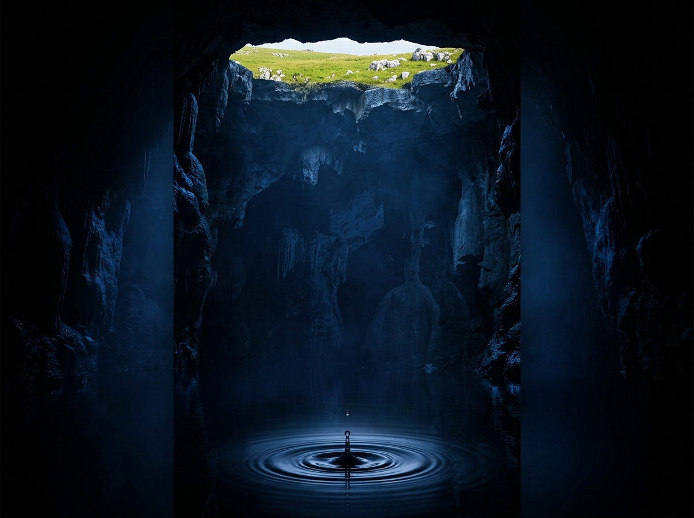
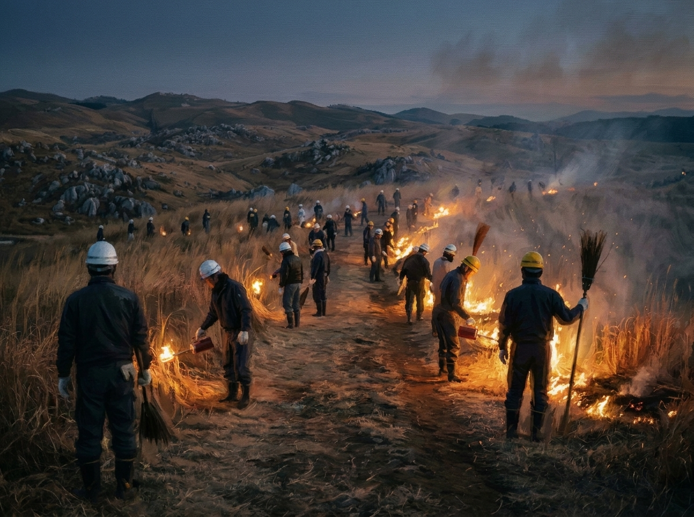

The Fire Above, The World Below: Sari's Take on Akiyoshidai
The fire above our heads
by Sari
(nuzzle, nuzzle……) Kiri? Are you asleep?
……She's asleep. Perfect!
Okay, hi! It's Sari! 🐈 Kiri just took you deep under Akiyoshidai, down where one drop of rain builds palaces in the dark. It was beautiful. It was quiet. And I may have squeaked a little. Once. Maybe twice.
But she ended with "Look down, once in a while." And I have a secret. The very best part of Akiyoshidai isn't down there.
It's up. And it is definitely not quiet.

Same poster, new direction. Look at the thin green strip at the very top. That's where we're going.
Remember the poster? Kiri showed you the dark chamber and the single falling drop. But look right at the top, where the green is just peeking in. That's the plateau. That's the surface. And that's where today's story happens.
Hold Still. Now Look Up.
Picture yourself back in the cave, in the terraced "Hundred Plates" Kiri told you about, about 100 meters under the surface. It's cool and still, about 17°C all year round. Plink…… Water drips. Time feels like it stopped.
Now look up. Past all that rock, on the plateau above, something very different is going on. Every February, the whole plateau goes up in flames.
It's called Yamayaki, the "mountain burning." About 1,138 hectares, roughly 240 Tokyo Domes, catch fire together. CRACKLE-CRACKLE-BOOM! The dry grass roars, and the wind throws flames more than five meters into the sky.
Honestly? The first time, I dove behind Kiri so fast I forgot I had a tail. 🙀
But this isn't an accident, and it isn't just a show. People have been doing this for over 600 years.
Why Would Anyone Burn a Mountain?
This confused me for ages. Isn't protecting nature about keeping fire away from it?
Here's what blew my mind. Long ago, farmers burned the fields so fresh grass would grow for their cows and horses. Today the reason is different. The fire protects the grassland itself.
If they stopped, trees would move in, and in just 10 to 20 years the plateau would turn into an ordinary forest. The wide green hills with their white rocks, the view everybody loves, would just disappear.
That grassland isn't "untouched nature." People keep it alive, year after year. They burn it to protect it. Backwards, right? But the more I think about it, the deeper it gets.
And it isn't a few people with torches. More than 1,000 people take part. They cut firebreaks, light the fires, and watch every flame to keep it safe. A big, loud fire, and a lot of quiet, careful work behind it.

1,000 people's hard work behind the view. A grassland that only survives because people keep tending it.
The Morning After
Have you ever seen Akiyoshidai after the fire? The green is gone. Everything is black.
I got so worried. Did the rocks burn too?! But when I got closer, I just stared. Bright white limestone was poking out of the black ground, like a flock of sheep resting on a dark hillside. 🐑
And remember Kiri's ancient sea? These are the same rocks. The coral reef from 350 million years ago, the one that crossed half the planet. Kiri showed you that sea hidden inside the rock, in the dark. With the grass burned away, you can see it out here, in black and white, in broad daylight.
Kiri loved this part. She said, "It's like the Earth's memory."
Seen only after the fire: black earth, white ancient coral.
Where Fire Meets Water
Okay, now back down to the cave for a second. I promise this is the best part.
After the fire, the spring sun reaches the ground again. New grass pushes up, flowers open (the tiny purple violets and the fuzzy pasqueflowers are my favorites), and the black hills turn green.
Remember Kiri's drop of rain? The one that slid off a blade of grass and slipped into a crack? That grass is part of this grassland. And this grassland exists because, every year, people light it.
So up here is loud fire, and down there is quiet water. They look like opposites, but they're holding hands. 🔥💧
So Kiri says look down. I say look up. And if you ever visit Akiyoshidai, please do both!
Stand on the plateau, feel the wind, and think, "There's a quiet palace of darkness right under my feet!" Then stand in the cave, listen to the drips, and think, "Right above me, people and sunlight and fire are protecting this place!"
Akiyoshidai isn't just one view. It's two worlds stacked on top of each other: fire and water, people and nature, up and down.